A

Towing A from round 10 is locked. Round 15 starts from round 14 and makes the screen follow the drive. One rule picks the reading that matters most right now: the focus. The focus shows numbers and size; every other secondary reading stays quiet. Speed, gear, both corner bands, and the fuel line never move. Pick A or B.
The first matching row wins. The climb and descent thresholds are design values. The firmware must hold a focus for a few seconds (hysteresis), so a grade near 4 % does not switch the screen back and forth.
| Priority | Focus | Trigger | Firmware signal | On the truck today |
|---|---|---|---|---|
| 1 | Temperatures | any temperature hot | waterTemp, gearBoxTemp, oilTemp, diffOilTemp | yes |
| 2 | Tires | a tire low | mTpmsPressure | yes |
| 3 | Fuel | low-fuel light | alarmTable[151] | yes |
| 4 | Trailer brake | live trailer braking | brake pedal and controller output | no: protocol work |
| 5 | Fuel | 50 mi or less to empty | DTE | yes |
| 6 | Temperatures | any temperature warm | as row 1 | yes |
| 7 | Climb | grade 4 % or more, or boost 10 psi or more | mPitch; boost | grade yes; boost no: protocol work |
| 8 | Descent | grade −4 % or less | mPitch | yes |
| 9 | Warm-up | any temperature cold | as row 1 | yes |
| — | Calm | nothing above |
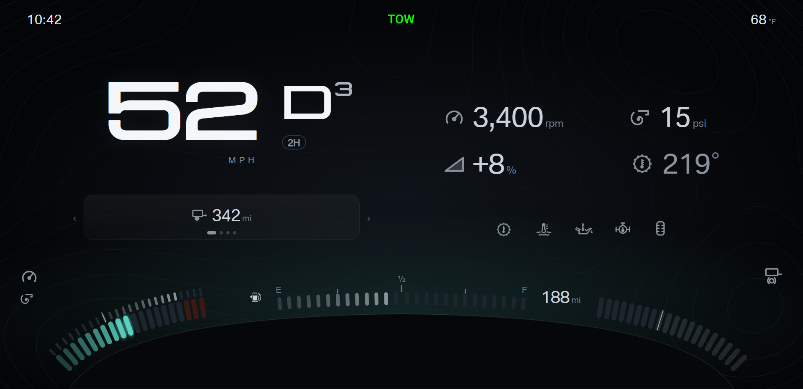
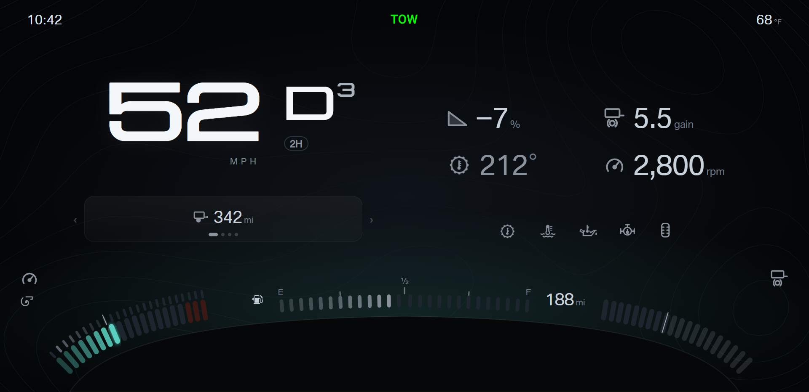
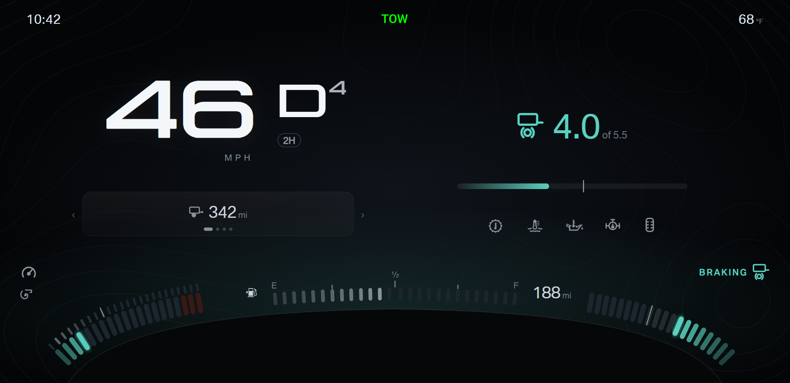
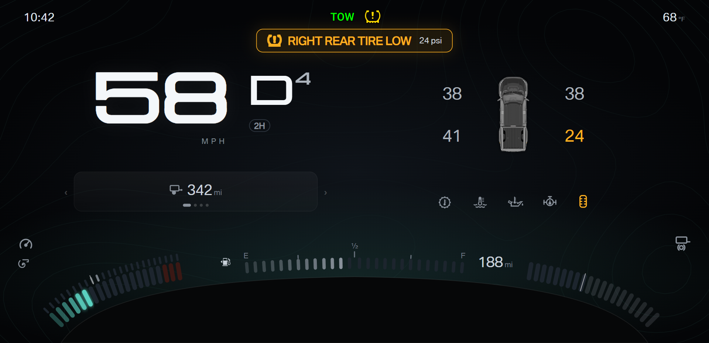
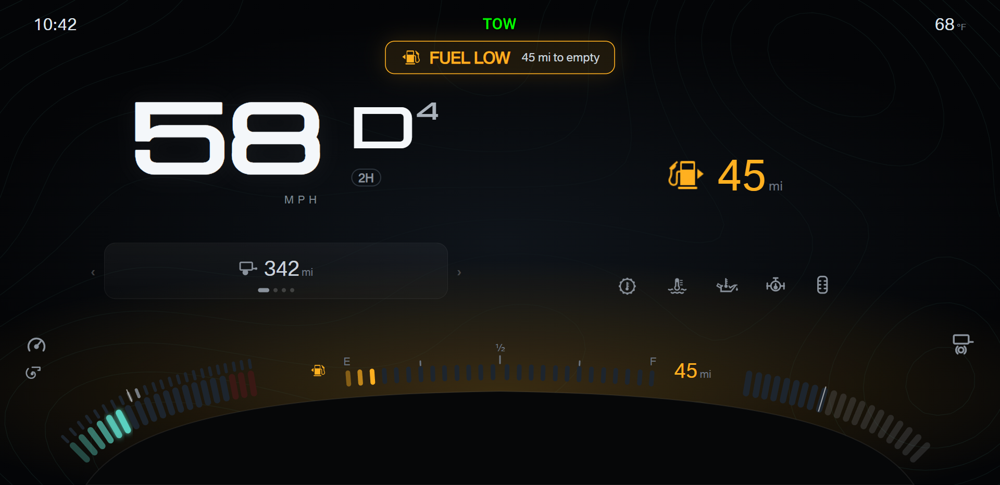
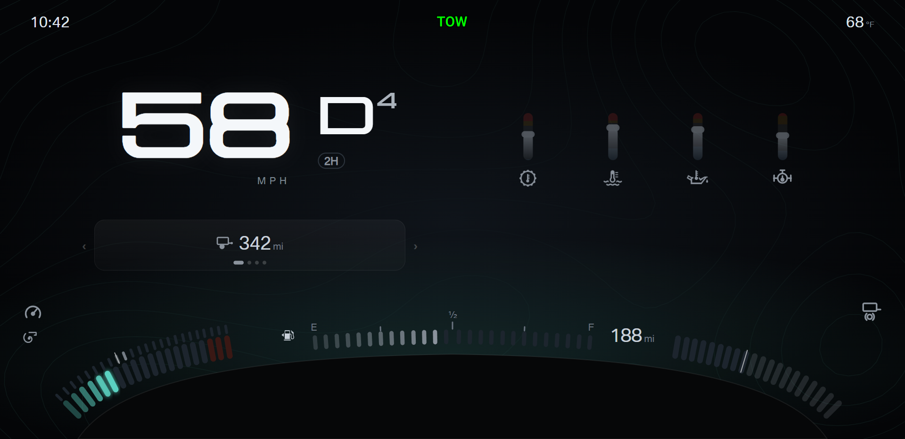
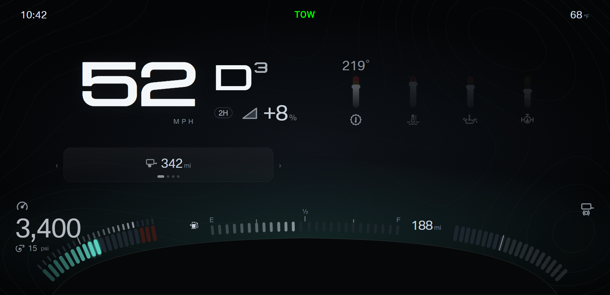
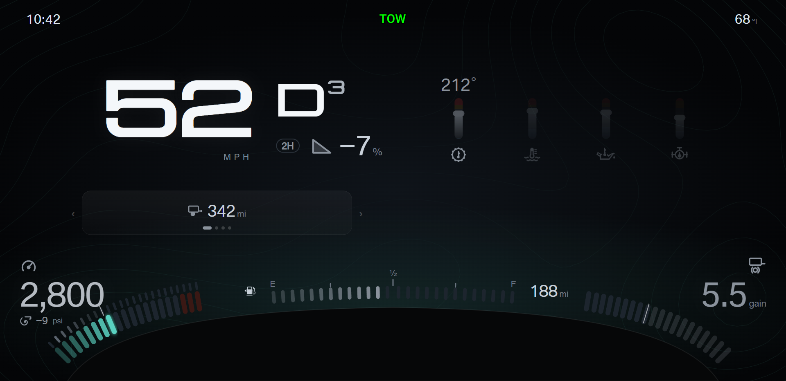
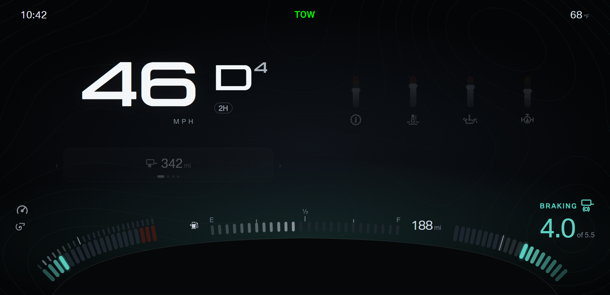
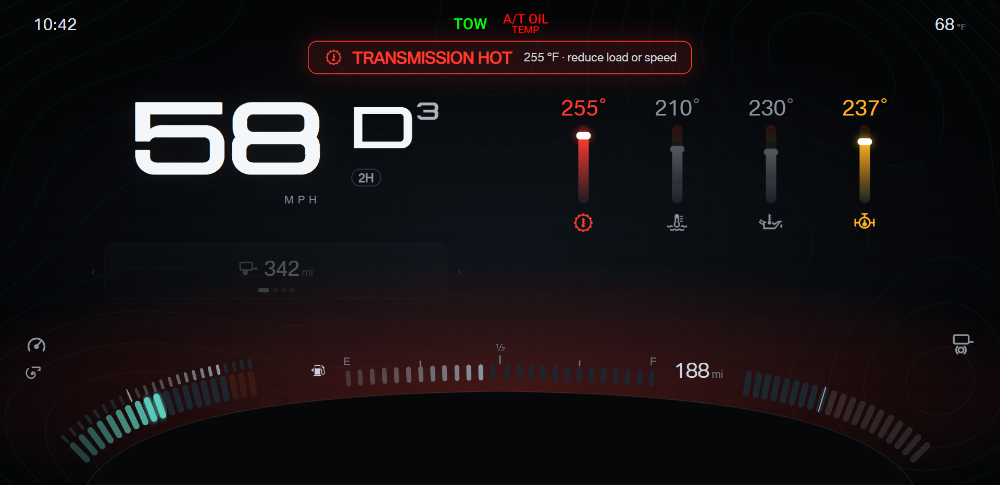
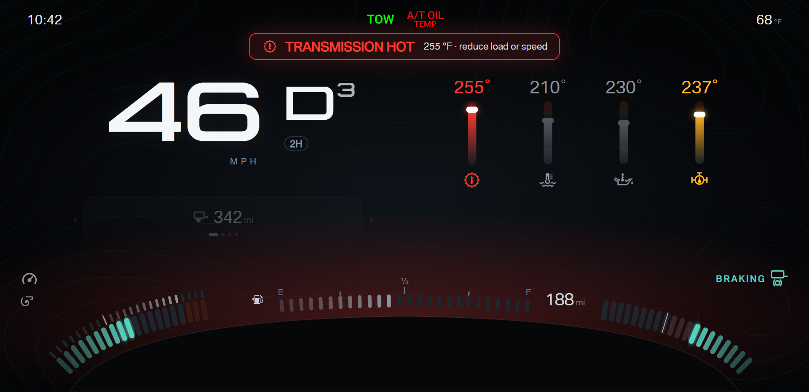
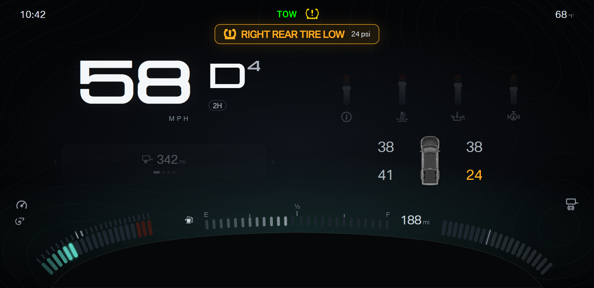
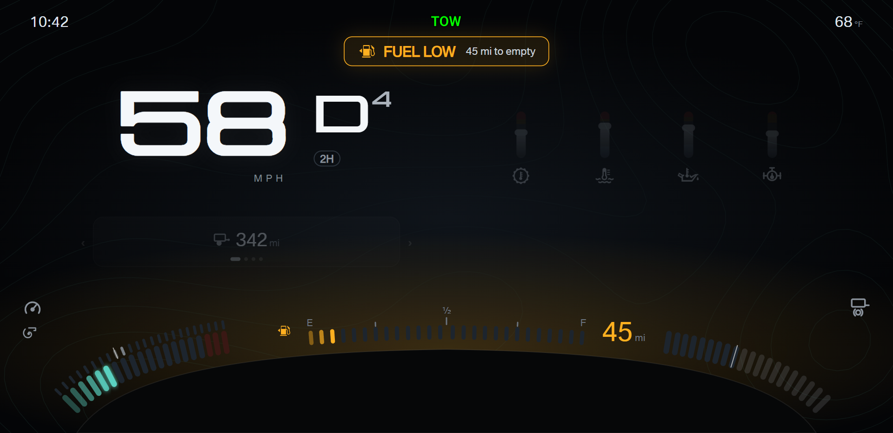
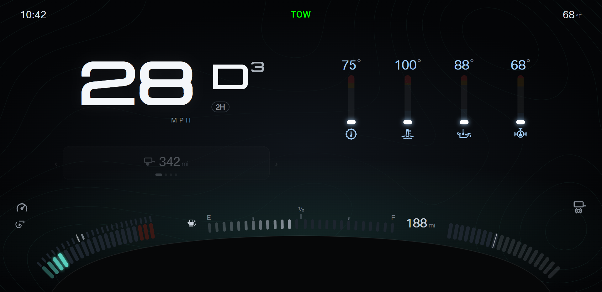